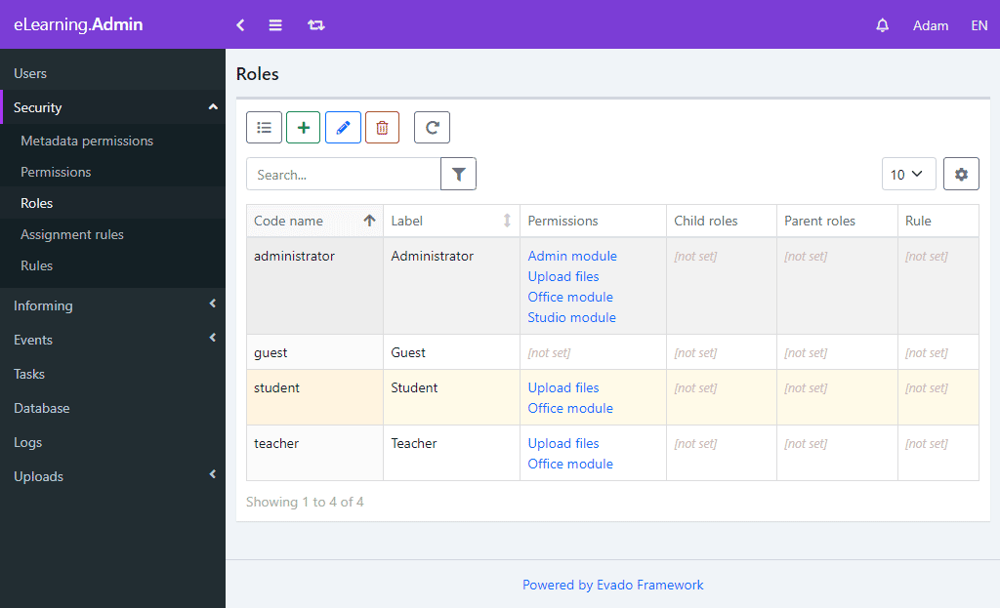

Access security
An important component of a client-server application is the differentiation of user rights. To manage the rights, go to the Administration module.
The Evado framework implements access control based on roles, permissions, and rules. For example, we need to allow the user to edit only their own articles. To do this, a permission is created that allows the user to edit articles. Then a rule is created that checks whether the user is the author of the article. Next, the Writer role is created, and the created permission is added to it. Now any user who has received the Writer role will be able to edit their own articles. For ease of management, permissions can be combined into a hierarchy-children-parents.
A metadata permission can be either forbidding or permissive. The allowed actions are also explicitly specified - reading, creating, editing, and/or deleting. In addition, access inheritance is determined by the type of entity. For example, if access to a class is allowed, then access to all its views is automatically allowed.
You need to allow the student to read the comments only of those tasks that are assigned to him. To do this, create metadata permissions with the Allow type and the Read action. Add a goal - the Comment class and a role - the Student. To limit comments only to tasks belonging to a student, we will create a rule - TaskCommentReaderRule. Permission rules are described by separate classes and can implement any required functionality.
component/meta/rbac/rule/TaskCommentReaderRule.js
The execute method is called when the permission is checked. It defines what is the purpose of the check - a task object or a list of objects.
In the checkReader method, first we find the student ID that corresponds to the task being checked, and then we find the user ID that corresponds to this student. If the ID matches the current user of the system, the rule is executed successfully.
Here you should pay attention to the fact that the permission is triggered if the result of executing the rule is true. If you change the permission type to Denied, it turns out that only the student associated with this task will not be able to read the comments. And to prohibit reading to all students, except for the bound one, you will have to make a new rule. A universal option is to check the type of permission and reverse the result with a forbidding type. Now, if the permission becomes forbidding, the rule will return true for all students except the one associated with the task.
In order for the security system changes to take effect, you need to restart it by clicking on the top panel.